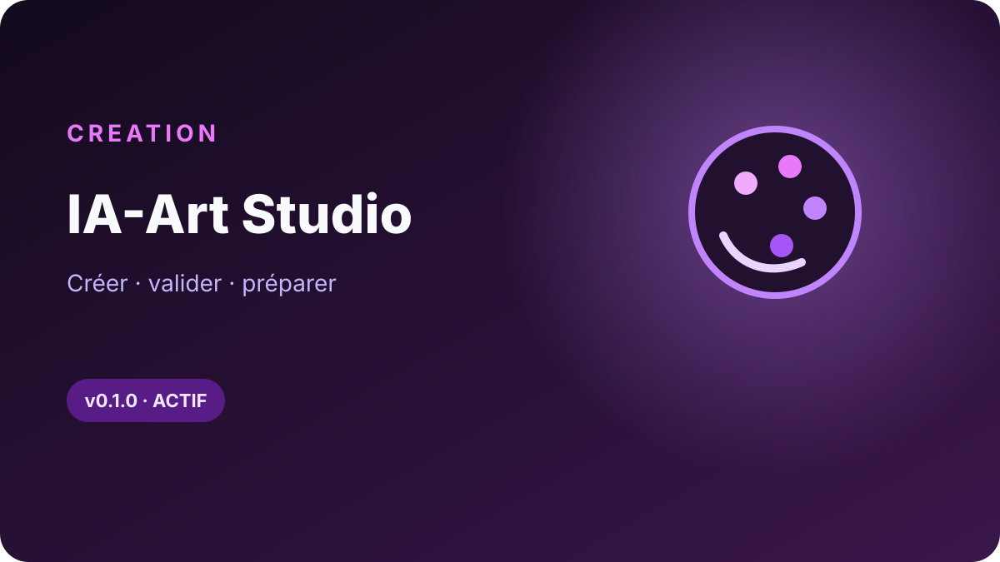

APSActif · 1.0.0
APSActif · 1.0.0Process intelligence
AI Process Studio
Comprendre un processus métier, qualifier les opportunités IA et transformer l'analyse en priorités exploitables.
ETORRENT-ORG · LOCAL-FIRST · HUMAN CONTROL
Des applications autonomes pour analyser, créer et visualiser sans transformer chaque besoin en plateforme. Un produit, un usage, un contrôle explicite par l'utilisateur.
PRODUCTS
Chaque application possède son propre cycle de vie. Les pages produit expliquent la valeur et montrent le résultat ; le processus n'est décrit qu'une seule fois.
APSActif · 1.0.0Process intelligence
Comprendre un processus métier, qualifier les opportunités IA et transformer l'analyse en priorités exploitables.
 VASPublic · 0.1.1
VASPublic · 0.1.1Visual workflow
Structurer un brief, travailler avec Studio Visuel dans ChatGPT, contrôler les créations puis exporter localement.
 ILActif · 1.0.0
ILActif · 1.0.0Structured visuals
Transformer un texte en infographie éditable : Vibe structure, l'application valide, AntV ou le moteur SVG dessine.

IAEn ligneVisual publishing
Préparer, contrôler et publier des créations visuelles avec une validation humaine explicite avant automatisation.
DESIGN PRINCIPLES
Pas de socle imposé avant de résoudre le problème. Chaque application reste simple à comprendre, tester et faire évoluer.
Les données et composants critiques restent maîtrisables localement ; les services externes n'interviennent que lorsqu'ils apportent une valeur claire.
L'IA structure, propose ou accélère. Les validations importantes restent visibles et assumées par l'utilisateur.
OPEN DEVELOPMENT
Les projets publics sont documentés séparément, avec leurs versions, leurs contraintes et leurs modes d'installation.